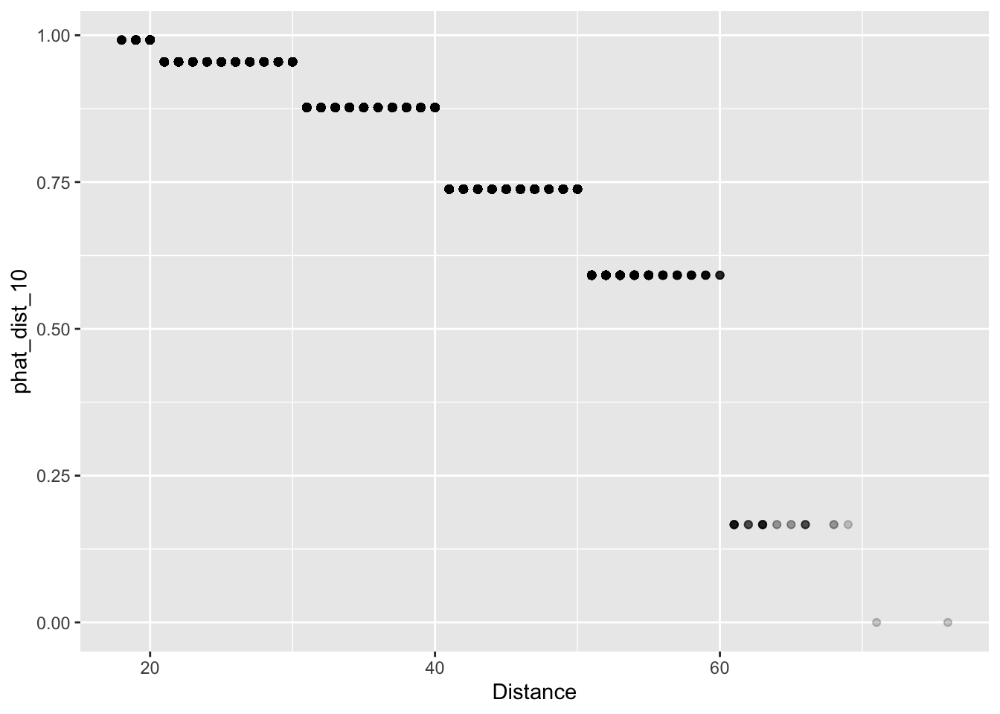

Lecture 7: More About Regression
In Lecture 4 and Lecture 6, we started building a model for predicting a baseball player’s 2015 batting average using his 2014 batting average. We found that some models, even though they fit the data quite well, appeared to overfit and may not predict future observations well. Overfitting happens when the model is too complex; the model is improperly describing the random error rather than properly describing the relationship between variables. We will switch gears a little bit and discuss how to diagnose overfit issues using data on field goals in the NFL.
Training and Testing Paradigm
Suppose we have fit multiple models to a given dataset. How should we
choose which model is the best?
l One strategy might be to see how well the models predict the data we
used to fit them. While this seems intuitive, it is possible to
“over-learn” the patterns in this training data. Over-learning leads
models to apply only the sample with which it was built, not the overall
population or future data instances
A common alternative is to split our original dataset into two parts: a training set and a testing set. We fit all of our models on the training set and then see how well they predict the values in the testing set. Think of the training set as a sample and the testing set as a population.
Field Goal Success in the NFL
The file “nfl_fg_train.csv” contains a large dataset about field goals attempted in the NFL between 2005 and 2015. First, we will train several models of field goal success with this data. Then, we will evaluate their predictive performance using the data contained in “nfl_fg_test.csv”.
library(tidyverse)
fg_train <- read_csv("data/nfl_fg_train.csv")## Rows: 9505 Columns: 8
## ── Column specification ───────────────────────────────────────────────────────────────────────────────────────────────────────────
## Delimiter: ","
## chr (2): Team, Kicker
## dbl (5): Year, GameMinute, Distance, ScoreDiff, Success
## lgl (1): Grass
##
## ℹ Use `spec()` to retrieve the full column specification for this data.
## ℹ Specify the column types or set `show_col_types = FALSE` to quiet this message.The simplest forecast for field goal success probability is the overall average success rate. This forecast does not differentiate between players or attempt to adjust for distance or other game contexts. To compute this forecast, we need to find the average of the data in the column “Success.” The code below adds a column to the tbl called “phat_all”
fg_train <-
fg_train %>%
mutate(phat_all = mean(Success))It turns out that kickers make just over 83% of their attempts.
However, we know that there are some truly elite kickers (e.g. Justin
Tucker) who make well over 83% of their attempts, and other kickers
(e.g. Billy Cundiff) who make less than 83% of their attempts. Instead
of forecasting field goal success probabilities with the overall
average, we could compute each individual kicker’s conversion rate. This
can be done using group_by() and mutate(). In
the code below, we add a column to fg_train called
“phat_kicker”, which contains each kicker’s individual field goal
conversion rate. Notice that because we adding a grouping to carry out
this computation, we need to remove the grouping using
ungroup() when we’re done.
fg_train <-
fg_train %>%
group_by(Kicker) %>%
mutate(phat_kicker = mean(Success)) %>%
ungroup()Intuitively, distance is one of the main factors of whether a kicker
makes a field goal. We will use the cut() function to bin
the data according to distance. Then, we will compute the conversion
rate (averaged over all kickers) within each bin. To do this properly,
we must have used the ungroup() function at the end of our
last line of code.
In our dataset, the shortest field goal attempt was 18 yards and the longest was 76. We will begin by binning our data into 10 yard increments, 10 – 20, 20 – 30, …, 70 – 80. We then save the bin label in a column called “Dist_10” and the predictions in a column called “phat_dist_10”.
fg_train <-
fg_train %>%
mutate(Dist_10 = cut(Distance, breaks = seq(from = 10, to = 80, by = 10))) %>%
group_by(Dist_10) %>%
mutate(phat_dist_10 = mean(Success)) %>%
ungroup()We can now look at a scatter plot of distance and our forecasts “phat_dist_10”. Since there are many attempts from certain yardages, we’ll use alpha-blending (see Lecture 2 for a refresher on this!) to change change the transparency of the points according to their frequency. Essentially, darker dots have higher n values than lighter dots.
It certainly looks like our predictions make some intuitive sense: the estimated probability of making a field goal decreases as the distance increases.
fg_plot <- ggplot(fg_train) +
geom_point(aes(x = Distance, y = phat_dist_10), alpha = 0.2)
fg_plot
We also could have binned field goal Distance 5- or 2-yard
increments, saving bin labels into columns called “Dist_5” or “Dist_2”.
And similar to the 10-yard bins, we could add columns to
fg_train that computes the overall conversion rate within
each of these 5-yard or 2-yard bins.
fg_train <-
fg_train %>%
mutate(Dist_5 = cut(Distance, breaks = seq(from = 10, to = 80, by = 5))) %>%
group_by(Dist_5) %>%
mutate(phat_dist_5 = mean(Success)) %>%
ungroup()
fg_train <-
fg_train %>%
mutate(Dist_2 = cut(Distance, breaks = seq(from = 10, to = 80, by = 2))) %>%
group_by(Dist_2) %>%
mutate(phat_dist_2 = mean(Success)) %>%
ungroup()Now we plot our predictions based on three different binning methods.
fg_plot <-
ggplot(fg_train) +
geom_point(aes(x = Distance, y = phat_dist_10), alpha = 0.1, col = 'black') +
geom_point(aes(x = Distance, y = phat_dist_5), alpha = 0.1, col = 'blue') +
geom_point(aes(x = Distance, y = phat_dist_2), alpha = 0.1, col = 'red')
fg_plot
Now when we binned our data into 2-yard increments, we find that our forecasts are no longer monotonic decreasing. Probability of making a field decreases overall; but in our 2-yard bins, the probability increases from 44 to 46 and 52 to 54 years. Remember, monotonic means only decreasing or only increasing for all values. In Lecture 8, we’ll address this with a more formal regression method.
Assessing Predictions
We now have several predictive models of field goal success: phat_all, phat_kicker, phat_dist_10, phat_dist_5, and phat_dist_2. Recall from Lecture 4 that to assess how well we are predicting a continuous outcome, we could use the RMSE. When predicting a binary outcome, we have a few more options. To set the stage, let \(y_{i}\) be the outcome of the \(i^{\text{th}}\) observation and let \(\hat{p}_{i}\) be the forecasted probability that \(y_{i} = 1.\) (i.e. of making the FG)
The Brier Score is defined as \[ BS = \frac{1}{n}\sum_{i = 1}^{n}{(y_{i} - \hat{p}_{i})^{2}} \] Looking at the formula, we see that the Brier score is just the mean square error of our forecasts. Using code that is very nearly identical to that used to compute RSME in Lecture 4, we can compute the Brier score of each of our prediction models.
summarise(fg_train,
phat_all = mean( (Success - phat_all)^2),
phat_kicker = mean( (Success - phat_kicker)^2),
phat_dist_10 = mean( (Success - phat_dist_10)^2),
phat_dist_5 = mean( (Success - phat_dist_5)^2),
phat_dist_2 = mean( (Success - phat_dist_2)^2))## # A tibble: 1 × 5
## phat_all phat_kicker phat_dist_10 phat_dist_5 phat_dist_2
## <dbl> <dbl> <dbl> <dbl> <dbl>
## 1 0.140 0.138 0.125 0.123 0.123Which model has the lowest Brier score? Do you think this model over-fits the data?
Before assessing how well our models predict out-of-sample,
it will be useful to create tibbles that summarize each model’s
forecasts. For instance, when we grouped the data by kickers, we don’t
need multiple rows recording the same prediction for each kicker.
Instead, we can create a tbl called phat_kicker which has
one row per kicker and two columns, one identifying kicker and one for
the associated forecast:
phat_kicker <-
fg_train %>%
group_by(Kicker) %>%
summarize(phat_kicker = mean(Success))Create similar tibbles for phat_dist_10, phat_dist_5, and phat_dist_2.
phat_dist_10 <-
fg_train %>%
group_by(Dist_10) %>%
summarize(phat_dist_10 = mean(Success))
phat_dist_5 <-
fg_train %>%
group_by(Dist_5) %>%
summarize(phat_dist_5 = mean(Success))
phat_dist_2 <-
fg_train %>%
group_by(Dist_2) %>%
summarize(phat_dist_2 = mean(Success))The file “nfl_fg_test.csv” contains additional data on more field
goals kicked between 2005 and 2015. Since we have not used the data in
this file to train our models, we can get a sense of the
out-of-sample predictive performance of our models by looking
at how well they predict these field goals. We first load the data into
a tbl called fg_test.
fg_test <- read_csv("data/nfl_fg_test.csv")## Rows: 1682 Columns: 8
## ── Column specification ───────────────────────────────────────────────────────────────────────────────────────────────────────────
## Delimiter: ","
## chr (2): Team, Kicker
## dbl (5): Year, GameMinute, Distance, ScoreDiff, Success
## lgl (1): Grass
##
## ℹ Use `spec()` to retrieve the full column specification for this data.
## ℹ Specify the column types or set `show_col_types = FALSE` to quiet this message.Using mutate() and cut(), add columns
“Dist_10”, “Dist_5”, and “Dist_2” to fg_test that bin the
data into 10-yard, 5-yard, and 2-yard increments.
fg_test <-
fg_test %>%
mutate(Dist_10 = cut(Distance, breaks = seq(from = 10, to = 80, by = 10)),
Dist_5 = cut(Distance, breaks = seq(from = 10, to = 80, by = 5)),
Dist_2 = cut(Distance, breaks = seq(from = 10, to = 80, by = 2)))We are now ready to apply our fg_train model’s forecasts
to fg_test. For instance, we can add the forecast from
“phat_all”, which is just the overall conversion rate averaged over all
kickers. Notice that instead of computing the mean of the column
“Success” from fg_test, we are computing the mean from
fg_train.
fg_test <-
fg_test %>%
mutate(phat_all = mean(fg_train[["Success"]]))Joining is a powerful technique to combine data from two different
tables based on a key. The key is what enables us to match rows
between the tables. For instance, to add the forecasts from the tbl
phat_kicker to the tbl fg_test join works
row-by-row. First, for each field goal in fg_test, the
function identifies the kicker who attempted the field goal. Then it
matches the with corresponding kicker row from the tbl
phat_kicker. The join function then appends that kicker’s
forecast from phat_kicker to the row in
fg_test. What we have just described is what is known as an
“inner join”. In this situation, the key was the Kicker. The code to
carry out these operations is given below.
fg_test <-
fg_test %>%
inner_join(phat_kicker, by = "Kicker")To verify that we have successfully performed this join, we can print
out a few rows of fg_test:
select(fg_test, Kicker, Success, phat_kicker)## # A tibble: 1,682 × 3
## Kicker Success phat_kicker
## <chr> <dbl> <dbl>
## 1 Akers 1 0.788
## 2 Akers 1 0.788
## 3 Bironas 1 0.850
## 4 Bironas 1 0.850
## 5 Bironas 1 0.850
## 6 Brien 0 0.333
## 7 Brown 0 0.829
## 8 Brown 1 0.829
## 9 Brown 1 0.829
## 10 Brown 1 0.829
## # … with 1,672 more rowsLet’s unpack the inner join code line-by-line: in the first two
lines, we are telling R that we want to over-write fg_test.
Next, we pipe fg_test to the function
inner_join, which takes two more arguments. The first
argument phat_kicker tells the function where the
additional data corresponding to each key value is. The last argument
by = "Kicker" tells the function that the key we want to
use is the kicker.
Mimic the code above, we can add columns for fg_test for
the remaining three predictive models: phat_dist_10,
phat_dist_5, and phat_dist_2.
fg_test <-
fg_test %>%
inner_join(phat_dist_10, by = "Dist_10") %>%
inner_join(phat_dist_5, by = "Dist_5") %>%
inner_join(phat_dist_2, by = "Dist_2")Now, we can compute the out-of-sample Brier scores for each of our models. Which has the best out-of-sample performance?
## # A tibble: 1 × 5
## phat_all phat_kicker phat_dist_10 phat_dist_5 phat_dist_2
## <dbl> <dbl> <dbl> <dbl> <dbl>
## 1 0.134 0.133 0.120 0.118 0.118Looking ahead to tomorrow
Tomorrow, we are going to use logistic regression to take
the “binning-and-averaging” approach we used above to its logical
extreme (i.e. what would happen if we made our bins infinitesimally
small). In order to do that, we will want to save our tbls
fg_train and fg_test:
save(fg_train, fg_test, file = "data/nfl_fg.RData")